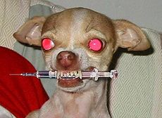
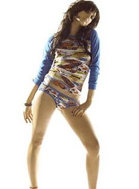
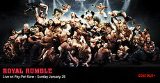

Pelea
 De: La Frikipedia, la enciclopedia extremadamente seria.
De: La Frikipedia, la enciclopedia extremadamente seria.
Significados
 Nose que hace acá esta foto.
- 1r significado: La novia o mujer del Pelee, la pobre no tenia nombre así que aparte de coger el apellido de su marido también le cogió el nombre.
- 2o significado: Seguro que alguno de los verbos de pelar sera... o era pelear, da igual, alguna de esas conjugaciones raras que te hacen aprender en el instituto y en la escuela. Este significado mejor no recordarlo.
- 3r significado: Meterse, reventarse y joderse a hostias. Bien dicho: Acto en en el que dos o más personas entablan una violenta relación donde usan todo el cuerpo para ganar al otro en una competición de fuerza. Vamos que mola mazo ver como les chorrea la sangre, se rompen los dientes y como terminan todo hechos mierda.
- La mujer del pelo más largo de tu culo, Pelea es su nombre completo, pero para las amigas Pela
- 4o significado: Como todos los frikipedicos sabemos un cani NUNCA ataca solo así que cuidado
losjebisson los que le plantan frente \m/
Tipos
- Ilegales: La mayoría, donde la pasta esta por todos sitios y el que pierde sale del edificio en un coche negro, muy negro.
- Legales: ¿Eso existe?
- De perros: Se hace en las protectoras de animales, dicen que los protegen pero con esa excusa consiguen un super alijo de perros salvajes y callejeros pa hacer sus luchas. No estan muy bien vistas, sobretodo por las
duquesas ricas hijas de puta que cuidan mas a su perro de mierda que al jodido mendigo de la esquina duquesas.
- De Gallos: Aunque no lo parezca también son jodidos, meten cada picotazo, preguntadselo al colgao que los cria, que le faltan 4 dedos y un ojo.
- De periquitos: Son peores que gallos, perros y incluso perores que los del Persing Catch, són los más
hijos de puta fuertes. Si no te lo crees mira la peli "Los pájaros", dicen que son cuervos pero los cuervos tenían miedo y pintaron periquitos de negro.
- La de los patios: Los típicos cagones enanos que en la escuela se tiran al suelo y en dos segundos están llorando, son las menos vistas y las mas penosas.
 Principal motivo de una pelea.
Persing Catch
Esta mierda fabulosa tradición necesita un apartado a parte. Es una variante del teatro pero con más éxito que este, los actores terminan con una fama muy grande y se forran, de paso también consiguen estar kuadrados, a base de culturismo, aburridas clases de cultura. Algunos incluso se inventan falsas identidades y chorradas x el estilo en plan Rey Misterio, que se cree que esta en México.
Otra cosa característica del persing catch es que el arbitro o la novia de uno de los luchadores cojan un ladrillo, un trozo de metal, una silla, lo que sea y lo estampen contra el cabezon de uno de los "luchadores". Aunque debemos remarcar que el árbitro siempre termina recibiendo más que los actores, es que, pobrecitos, de tanto aprenderse los guinoes ya no saben ni a quien deben pegar. La otra cosa graciosa es los nombres de las técnicas que se inventan, vamos ni que estuvieramos en Naruto. X ejemplo, en vez de Técnica de multiplicación de huesos, ellos hacen la técnica de reducción (imagino que no hace falta decir en que consiste). La técnica más BUENA y PREFERIDA es el 619 (pa los que no sepais leer números: six one nine), si ha causado tanto furor fué por la típica confusión con el 69, técnica muuuuuuuy conocida y aplaudida.
Ah, pido perdón por meter esto en peleas, que ahora que lo veo, no es más que teatro:), pero vamos, que después de matarme a escribir lo va a borrar tu madre otro, xd.
Practicantes de las peleas
- Los feos (un guapo nunca se pegaría).
- Los matones. Tienen una reputación que mantener.
- Los que juran delante el profe de karate que solo usaran sus enseñanzas para la defensa propia.
- Los que no saben pedir las cosas porfavor.
- Los hermanos.
- Los enanos (los de verdad y los niños).
- Los del equipo de Rugby.
- Los que no tienen nada mejor que hacer.
- George Bush. El enviado de Satanás, ve la mínima presencia de una pelea y se mete en ella de lleno.
- Yo.
- Los Polis, exactamente un 99'99%.
- IP anónima
- Los de Mogente.
- Los ultras.
- Los canis.
- Los curas.
- Hulk
Siguen las peleas pero no participan
 Estos no se atreven a pelar
- Los profesores. Cuando ven a 2 chicos peleándose hacen apuestas, cuando ven que casi están para el arrastre los paran para que los padres no les denuncien.
- Los apostadores. Son los que llevan la economía del país.
- Los chulos. Siempre dicen: "Si fuese por mi me metería con ellos y en dos segundos les separaba peo es que la pelea esta tan emocionante..."
- Los chinos. Sitio donde van sitio que hacen fotos, son la ruina de los que preparan las peleas, gracias a sus putas fotos la poli siempre les pilla.
- Las palomas. Hay una reputación que mantener no?
- Los de la protectora de animales. Son los apostadores pero en las peleas de animales.
- Tú
- Dios
- Los amigos putillas
- Los chivatos
Los que odian las peleas
- Los maricones. Comentario típico: "Oix, !que brutos que son!
- Los muertos. Les molesta el ruido de cuando se rompen narices, dientes y los gritos de los del alrededor, no les dejan dormir a los pobres.
- Los polis. Mejor dicho, un 0'001% de los polis.
- Las ONGs.
- Los de tu barrio.
¿Peleas famosas?
- Chuck Norris vs Bruce Lee
- Supersaiyans vs wombats
- Vin Diesel vs Steven Seagal
- Las batallas del Fin del Mundo
- Hulk vs La Mole
- La batalla de los frikipedistas
- IP anónima y Liu Kang
- Jean Claude Van Damme y Jackie Chan
Autor(es):
- Frikiman
- Veni Vidi Vici
- E1324
- Kevrochi
- Rober vlc
- Distortion zone
- Audi
- Bladguer
- Harry El del Pote
- Topaza
Frikipedia 2005-2016, Licencia
GFDL 1.2 - Extraído por FrikiLeaks